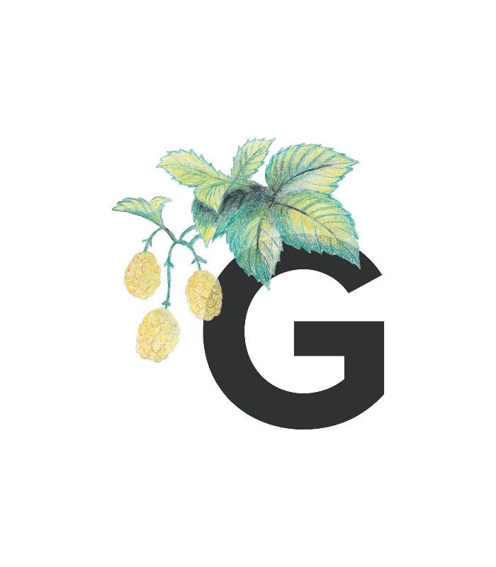
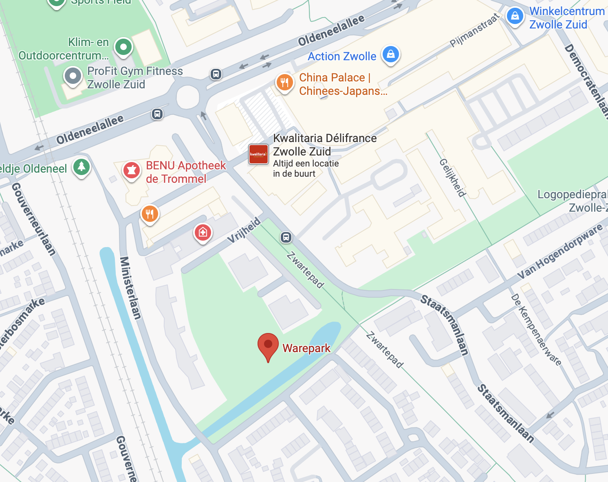
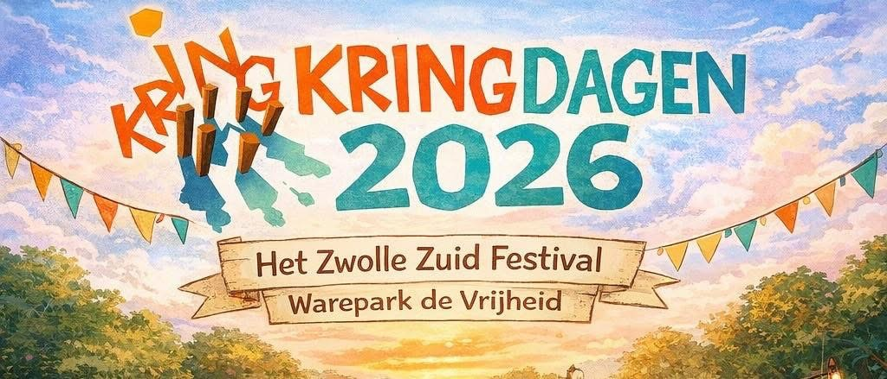

Zwols Bierproevement
Zwolle · 2026
Onderdeel van de Kringdagen — het Zwolle-Zuid festival
Over het evenement
Het Zwols Bierproevement zet de lokale en regionale ambachtelijke brouwerijen in het spotlicht. Ontmoet de mensen achter de bieren en proef speciaalbieren uit Zwolle en verre omstreken.
Het Zwols Bierproevement draait om lokale trots. De meeste deelnemende brouwerijen komen uit Zwolle zelf of de directe omgeving — van Assendorp tot Wijhe, van Marslanden tot het Vechtdal. Ambachtelijk, kleinschalig en met passie gebrouwen. Dit jaar verwelkomen we ook brouwerijen van verder weg — uit Friesland, Zeeland en de rest van Nederland.
Praat met de brouwers zelf, volg een masterclass bierproeven en ontdek jouw nieuwe favoriete speciaalbier. De toegang is volledig gratis. Proeven doe je via een proefmuntjessysteem, en de foodtrucks zorgen voor de perfecte hapjes.
Deelnemende brouwerijen
Dit jaar verwelkomen we 15 gepassioneerde brouwerijen — elk met een eigen signatuur en verhaal. Van lokaal tot regionaal, van klassiek tot experimenteel.
Zwols familiebedrijf van de broers Jasper en Joost Allema. Ze brouwen karaktervolle speciaalbieren als de Broers Bier, Goed Huwelijk en Moeders Mooiste — elk met een eigen verhaal en een uitgesproken smaakprofiel. Brouwen doen ze met lokale ingrediënten en veel liefde voor het vak.
brouwerijallema.nl ↗Kloosterbier gebrouwen in de kelders van het Dominicanerklooster in Assendorp. Axes Castellum — Latijn voor Assendorp — brouwt puur bier met eeuwenoude ingrediënten zoals gruut en koriander, gebaseerd op de Formula Antiqua uit 1576.
axes-castellum.nl ↗Coen & Coers zijn twee enthousiaste Zwolse hobbybrouwers die van hun passie een vak maakten. Ze brouwen met ambachtelijke mout uit het Vechtdal en werken samen met Brouwerij Allema voor de productie van hun recepten.
coco-craftbeers.nl ↗Ambachtelijke Friese brouwerij gevestigd in een voormalige scheepswerf aan de Dokkumer Ee. Grutte Pier — vernoemd naar de legendarische Friese vrijheidsstrijder — brouwt Belgisch geïnspireerde speciaalbieren als tripel, blonde en quadrupel, en is inmiddels een van de bekendste speciaalbiermerken van Friesland.
gruttepierbrouwerij.nl ↗Speelse brouwerij uit Oldebroek, opgericht in 2018. Jokkebrok combineert traditionele monnikenstijlen met eigen creatieve recepturen — van blonde ales en witbier tot tripel en bockbier. Altijd met een knipoog en een flinke dosis ambacht.
jokkebrokbrouwerij.nl ↗Brouwerij van Ramon en Saskia van Dam met filmisch geïnspireerde biernamen en opvallende labels. Milky Road brouwt smaakvolle speciaalbieren met karakter en een verhaal, zoals de Porter on the Orient Express en Alice Through the Lemongrass.
milkyroadbrewery.nl ↗Brouwerij uit het Gelderse Oosterwolde met een uitgesproken karakter. Taste of the Wolve maakt eerlijk en smaakvol bier dat gemaakt is om samen van te genieten — rondom de tafel, met vrienden, met herinneringen.
tasteofthewolve.nl ↗Vikingbeer brengt de beste Noorse speciaalbieren naar Nederland. Als gespecialiseerd importeur selecteren zij authentieke Scandinavische brouwsels die je nergens anders vindt — bier met verhaal, karakter en de nuchterheid van het noorden.
vikingbeer.nl ↗No-nonsense ambachtelijke brouwerij uit Velp, gevestigd in een duurzaam verbouwde voormalige autogarage. Opgericht in 2015 brouwt De Snor zuivere speciaalbieren met uitgesproken smaken: de Gele Snor blonde, de Stoere Snor IPA en het verfrissende Snor Witje.
brouwerijdesnor.nl ↗Een unieke combinatie van brouwerij, proeflokaal en brouwworkshops midden in Zwolle. Bij het Brouwtheater kun je niet alleen genieten van eigen gebrouwen speciaalbieren, maar ook zelf leren brouwen onder begeleiding van ervaren brouwers.
brouwtheaterzwolle.nl ↗Eigenzinnige brouwerij uit Albergen die al sinds 2000 speciaalbieren maakt. Met meer dan honderd verschillende biervarianten per jaar — van Belgische stijlen tot IPA's en stouts — heeft Huttenkloas ook internationaal naam gemaakt, onder meer bij de Brussels Beer Challenge.
huttenkloas.nl ↗Kleine ambachtelijke brouwerij uit Wijhe, gestart als hobbybrouwers in 2018 en in 2020 officieel van start gegaan. Chaos brouwt met passie, ervaring en een flinke dosis spontaniteit — want chaos hoort bij het leven, en goed bier ook.
chaosbieren.nl ↗Eén van de meest gerenommeerde ambachtelijke brouwerijen van Nederland, opgericht in 1997 in de Bollenstreek. Met meer dan 40 bierstijlen in het assortiment — van tripel tot barrel-aged porter en glutenvrije bieren — zijn ze een begrip in de speciaalbierwereld.
kleinduimpje.nl ↗Masterclass bierproeven
Gedurende het hele proevement organiseert Bierproefgenootschap Gij Zult Genieten uit Zwolle doorlopende masterclasses bierproeven. Deelnemen zonder aanmelding — gewoon langskomen!

Een Zwols gezelschap van bevlogen bierkenners dat de kunst van het bierproeven deelt met iedereen die meer wil weten over speciaalbier. Met jarenlange ervaring en een aanstekelijk enthousiasme nemen zij je stap voor stap mee door de wereld van smaak, aroma en brouwkunst. Of je nu net begint of al jaren bierliefhebber bent — de masterclass is voor iedereen toegankelijk en leerzaam.
Hobbybrouw wedstrijd
Hobbybrouwers uit Zwolle en omgeving meten zich in een eigen wedstrijd. De inzendingen zijn beoordeeld door erkende keurmeesters van het BKG — op 20 juni weten we wie het beste bier heeft gebrouwen.
Het Zwols Bierproevement organiseert een hobbybrouw wedstrijd voor thuisbrouwers uit de regio. Jouw bier wordt vakkundig gekeurd door keurmeesters van het Bier Keurmeesters Gilde (BKG) — de organisatie voor het objectief beoordelen van speciaalbieren in Nederland.
De beste inzendingen worden beloond tijdens het bierproevement. Deelname kost € 7,50 per bier.
De winnaars worden bekendgemaakt tijdens het bierproevement. Hobbybrouwers ontmoeten elkaar en wisselen brouwtips uit — een feest voor iedereen die passie heeft voor zelfgebrouwen speciaalbier.
De aanmeldperiode is verlopen. De deelnemende hobbybrouwers hebben hun bier aangemeld en instructies ontvangen.
Lever je bier in tussen 1 en 19 mei bij Grand Café Zuijdt. Breng per bier 2 flesjes mee.
Erkende keurmeesters van het Bier Keurmeesters Gilde beoordelen je bier op smaak, aroma, uiterlijk en stijlconformiteit.
De winnaars worden bekendgemaakt en beloond tijdens het Zwols Bierproevement op zaterdag 20 juni.
Locatie & bereikbaarheid
Warepark De Vrijheid is goed bereikbaar met de auto, fiets of stadsbus — en biedt volop ruimte voor een dag vol bierbeleving.

Ruime parkeergelegenheid aanwezig bij Warepark De Vrijheid. Parkeren kan in de parkeergarage van Winkelcentrum Zwolle-Zuid.
Je kunt je fiets kwijt op het evenementsterrein zelf. Zwolle is uitstekend per fiets te bereiken vanuit de omliggende wijken.
Neem lijn 8 naar halte WKC Zuid. Van daaruit is het evenementsterrein op loopafstand.
Het evenement is volledig rolstoeltoegankelijk. Voor vragen over toegankelijkheid: info@zwolsbierproevement.nl.
Veelgestelde vragen
